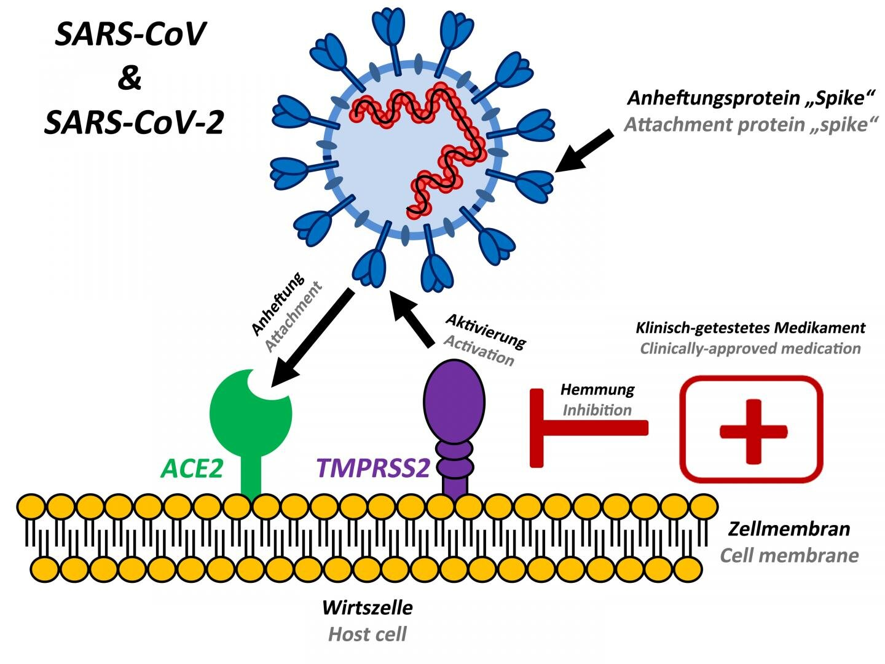
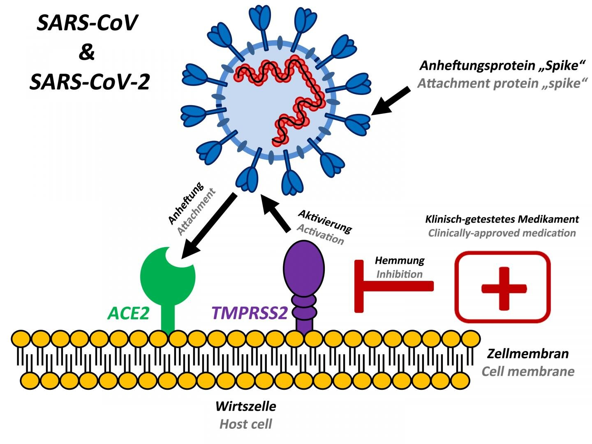

COVID 19 SYSTEM:
THE IMPACTS OF THE 2003 SARS OUTBREAK
After several months of unknown cases, Severe Acute Respiratory Syndrome or SARS is another disease believed to originate with bats and transfered to other animals and then humans. The symptoms of SARS are similar to Coronaviruses, including respiratory issues, cough, fever, and severe cold and flu symptoms.
 
